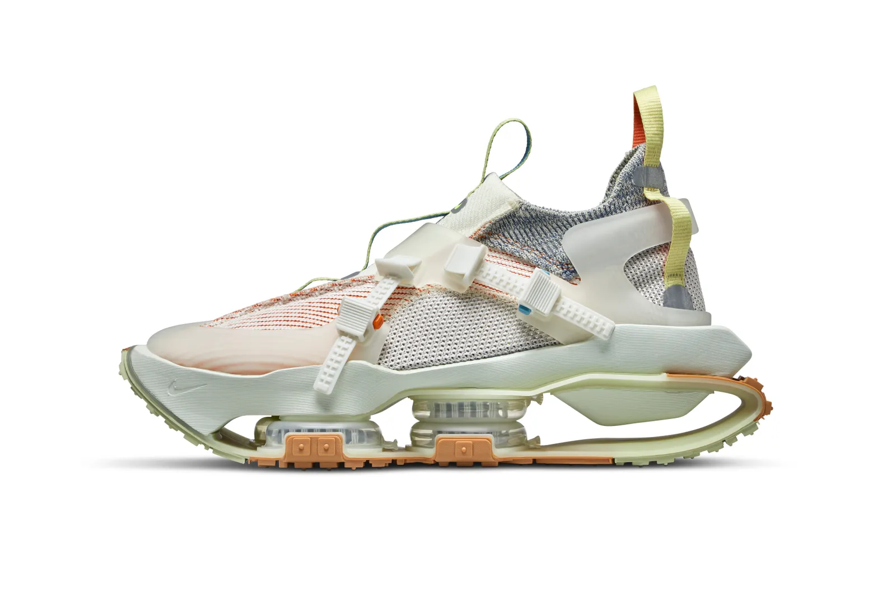

Nike ISPA Road Warrior
Sin duda, uno de los modelos más radicales y sorprendentes del año. Las Nike ISPA Zoom Road Warrior parecen sacadas de Mad Max. Se trata de un modelo que destaca por su suela vanguardista, en la que se puede apreciar que una gran zona abierta y vacía.
Estamos ante el modelo mas clasico dentro de lo que nos tiene acostumbrados ISPA. Estas Nike han sido creadas para garantizar el maximo confor a quien las lleve. Para esto, Nike ha creado una suela eact que es el doble d egrande que las habituales dentro de esta gama.
Nike ISPA Overreact FK Sandal

Nike ISPA Drifter
Unas zapatillas inspiradas en las botas de trabajo de Japón. La parte superior se este modelo está formada por un compuesto ligero de espuma flexible realizado con el mismo material que las Nike ZoomX, un componente clave de las zapatillas de running más rápidas de Nike.